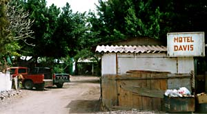
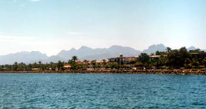

Advice for travelers: When arriving in a Latin American country during Holy Week, _have reservations.
We flew from San Francisco to Loreto on Good Friday and were lucky enough to have an exceptionally cool (and remarkably young) taxi driver haul us from hotel to hotel looking for a vacancy. We'd pull up, our driver would hop out, and the proprietor would shake his head slowly. One place told us that the only rooms available in the entire pueblo were at the Hotel Eden -- an all inclusive resort 10 miles outside town for US$240 a night. I'd done a bit of research on the net before we came and remembered that Eden was a clothing-optional swingers' resort. Yeah, right.
I was ready to crash on the beach with our gear, but the kid wanted to try one last place: the Motel Davis. It was a pit with dirty walls, cement floors, and a tiny, sagging bed. It also had an open room for $8. I tipped the kid and was happy for the roof and electric fan. Les was stoked; she loves these places.

Almost immediately a woman walked into our room and began going through everything. "Wow! You got a fresh bar of soap." she said through a thick Canadian accent. "And a door with a knob! This must be the deluxe room." She introduced herself as Reah from the backcountry of British Columbia. She was traveling alone from Los Cabos and was heading north. She left and we fell asleep.
Later, we headed out and found that our motel was only a block from the beach. We walked a ways down the waterfront out to the point. There, the river meets the ocean and forms a slough. There were urchins and half-eaten fish and other sea life, but lots of trash: bottle caps, shopping bags, and dog shit.

We ate at Playa Blanca overlooking the main street in Loreto, watching the locals cruise in their pickups and hatchbacks. I had a lobster and Les chose carne asada -- the only thing on the menu that wasn't seafood. We began to acclimate to Baja, putting away half a dozen beers each.
That night, when I got up to pee, a three inch cockroach crawled up the wall next to me.